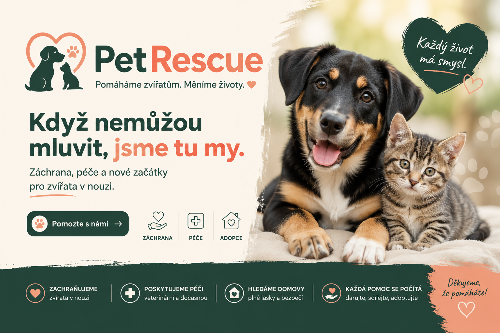
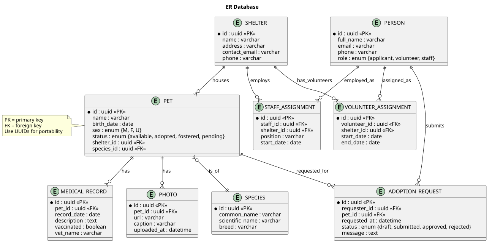
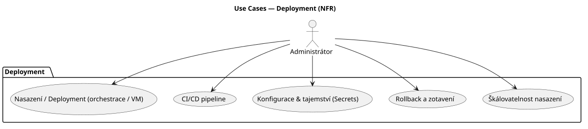
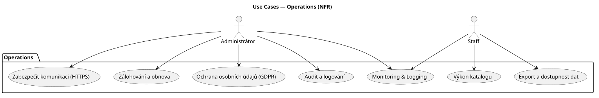
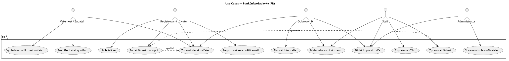
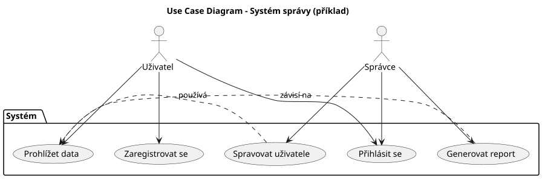

O projektu
Téma
Digitalizace zvířecích útulků a modernizace adopčního procesu.
Cílová skupina
Zaměstnanci a dobrovolníci útulků a záchranných stanic, plus veřejnost hledající adopci.
Perex
Hledání nového domova pro opuštěná zvířata nebylo nikdy jednodušší. PetRescue je moderní informační systém, který propojuje záchranné stanice se zájemci o adopci. Veřejnosti nabízí online katalog mazlíčků s možností okamžitého podání žádosti, personálu útulku zase nástroje pro evidenci svěřenců, správu zdravotních záznamů a administraci schvalovacího procesu.
Použitelné technologie
- Next.js
- TypeScript
- Tailwind CSS
- tRPC
- BetterAuth
- Prisma
- ESLint
ER diagramy
Níže jsou dva návrhy ER diagramu pro systém PetRescue.
Databázový ER diagram

Deployment Use case diagram

Operations Use case diagram

Funkční požadavky Use case diagram

Systémový Use case diagram

Katalog požadavků
Stručný katalog funkčních, nefunkčních a systémových požadavků pro PetRescue.
Úvod a účel
Tento dokument popisuje funkční a nefunkční požadavky pro informační systém PetRescue — systém pro evidenci zvířat v útulcích, správu adopcí, zdravotních záznamů a komunikaci se žadateli.
Rozsah systému
PetRescue umožní registraci útulků a uživatelů, správu profilů zvířat, přijímání a zpracování žádostí o adopci, správu rolí a auditní záznamy operací.
| ID | Požadavek |
|---|---|
| FR-01 | Registrovat a ověřit uživatele. |
| FR-02 | Přihlášení a autorizace. |
| FR-03 | CRUD útulků. |
| FR-04 | CRUD zvířat. |
| FR-05 | Fotogalerie zvířat. |
| FR-06 | Evidence zdravotních záznamů. |
| FR-07 | Vyhledávání a filtrování zvířat. |
| FR-08 | Podání žádosti o adopci. |
| FR-09 | Workflow zpracování žádosti. |
| FR-10 | Notifikace. |
| FR-11 | Role a oprávnění. |
| FR-12 | Audit a logování. |
| FR-13 | Export dat. |
| ID | Požadavek |
|---|---|
| NFR-01 | Bezpečnost. |
| NFR-02 | Dostupnost. |
| NFR-03 | Škálovatelnost. |
| NFR-04 | Výkon. |
| NFR-05 | Ochrana osobních údajů. |
| NFR-06 | Zálohování. |
| NFR-07 | Přístupnost. |
Systémové požadavky a omezení
- Databáze: relační DB (Postgres doporučeno) s ORM (Prisma).
- Autentizace: OAuth2 / session-based auth jako volitelná rozšíření.
- Integrace: e-mail provider (SMTP / SendGrid) pro notifikace.